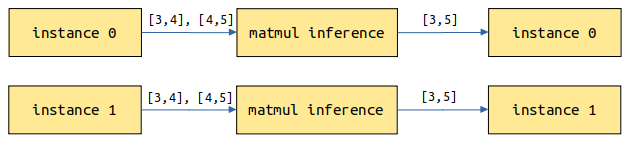

Servable Provided Through Model Configuration

Overview
Before running the sample network, ensure that MindSpore Serving has been properly installed and the environment variables are configured. To install and configure MindSpore Serving on your PC, go to the MindSpore Serving installation page.
MindSpore Serving Servable provides the inference services of the following types: One inference service comes from a single model, and the other one comes from a combination of multiple models. The two types of sevices are configured through the same interface. Models need to be configured to provide the Serving inference service.
The following describes how to configure models to provide Servable. ResNet-50 is used as an example to describe how to configure a single model to provide Servable. For details about the sample code, see the ResNet-50 Example. Serving client is referred to as the client.
Concepts
Methods
For a ResNet-50 inference model, the data sent by the client is images in JPG or PNG format, and the image classification is expected to be returned. The input of a ResNet model is the tensor generated by operations such as image Decode, Resize, and Normalize. The output is the score tensor of each category. The image needs to be converted into a tensor that meets the model input requirements during preprocessing. Name of the top 1 category or Names of the top 5 categories and their scores are returned after post-processing.
The following shows the resnet50 Servable data flowchart. The image data is transmitted from the client to the Serving through a network. The Serving performs preprocessing, inference, and post-processing, and returns the result to the client.

The provided preprocessing may vary according to the composition, structure, or type of data input from the client in different scenarios. The provided post-processing may also vary according to the model output requirements. For example, in the preceding resnet50 Servable, two post-processing functions are provided for the following two scenarios: Name of the top 1 category and Names of the top 5 categories and their scores.
Different services processing flows can be represented by different methods. One Servable can provide one or more methods. The Servable name and the method name are marked with a service provided by the Serving. Each method performs a series of operations such as Python processing or model inference on the data provided by the client, and returns the required result to the client.
The preceding resnet Servable provides the classify_top5 and classify_top1 methods.
A method of one Servable is used to:
Specify a method name for the client to specify a method to be used.
Specify the input and output names of a method for the client to specify the input and obtain the output.
Define one or more processing stages of the method. Each stage can be a Python function or a model. Within a method, the number and sequence of Python functions and models are not limited, and can be reused in multiple stages. A method can use multiple models.
Define a data flow between method input, stages, and method output. The former data value can be used as the latter data input.
Instances
Each request includes one or more independent instances which do not affect each other’s result. For example, a category is returned for an image, and three categories are returned for three independent images.
Services Provided by a Single Model
Take the ResNet-50 model as an example. The model configuration file directory is as follows:
resnet50
├── 1
│ └── resnet50_1b_cifar10.mindir
├── 2
│ └── resnet50_1b_cifar10.mindir
└── servable_config.py
resnet50: a directory, which is named after the Servable name.servable_config.py: configures Servable, including preprocessing and post-processing definitions, model declaration, and method definition.1and2: directories, which indicate models of the1and2versions. The model version is a positive integer starting from1. A larger number indicates a later version.resnet50_1b_cifar10.mindir: a model file. When the Servable is started, the model file of the corresponding version is loaded.
Preprocessing and Post-processing Definition
The following is an example to define preprocessing and post-processing:
import numpy as np
import mindspore.dataset.vision as vision
# cifar 10
idx_2_label = ['airplane', 'automobile', 'bird', 'cat', 'deer', 'dog', 'frog', 'horse', 'ship', 'truck']
def preprocess_eager(image):
"""
Define preprocess, input is image numpy, return preprocess result.
Return type can be numpy, str, bytes, int, float, or bool.
Use MindData Eager, this image processing can also use other image processing library,
likes numpy, PIL or cv2 etc.
"""
image_size = 224
mean = [0.4914 * 255, 0.4822 * 255, 0.4465 * 255]
std = [0.2023 * 255, 0.1994 * 255, 0.2010 * 255]
decode = vision.Decode()
resize = vision.Resize([image_size, image_size])
normalize = vision.Normalize(mean=mean, std=std)
hwc2chw = vision.HWC2CHW()
image = decode(image)
image = resize(image)
image = normalize(image)
image = hwc2chw(image)
return image
def postprocess_top1(score):
"""
Define postprocess. This example has one input and one output.
The input is the numpy tensor of the score, and the output is the label str of top one.
"""
max_idx = np.argmax(score)
return idx_2_label[max_idx]
def postprocess_top5(score):
"""
Define postprocess. This example has one input and two outputs.
The input is the numpy tensor of the score. The first output is the str joined by labels of top five, and the second output is the score tensor of the top five.
"""
idx = np.argsort(score)[::-1][:5] # top 5
ret_label = [idx_2_label[i] for i in idx]
ret_score = score[idx]
return ";".join(ret_label), ret_score
The preprocessing and post-processing are defined in the same format. The input parameters are the input data of each instance. If the input data is a text, the input parameter is a str object. If the input data is of other types, such as Tensor, Scalar number, Boolean, and Bytes, the input parameter is a numpy object. The instance processing result is returned through return, and each data returned can be numpy array or bool, int, float, str, or bytes of Python.
Model Declaration
The sample code for declaring the resnet50 Servable model is as follows:
from mindspore_serving.server import register
resnet_model = register.declare_model(model_file="resnet50_1b_cifar10.mindir", model_format="MindIR", with_batch_dim=True)
In the preceding code:
The input parameter
model_fileindicates the model file name.The input parameter
model_formatindicates the model format.If the first dimension of the model input and output is not the
batchdimension, you need to change the value ofwith_batch_dimfrom the default valueTruetoFalse.Set
with_batch_dimtoTrueif models contain thebatchdimension, such as image and text processing models. Assume thatbatch_size=2and the current request has three instances of images which will be split into two batches for model inference. For the first batch, two images are inferred to return two results. For the second batch, the remaining image is copied and inferred to return one result. Finally, three results are returned.
Set
with_batch_dimtoFalseif models do not involve or consider thebatchdimension. For example, the input and output are matrix multiplication models of 2D tensors. Each instance of the request performs an independent inference task.
If a model has one data input with
batchdimension information and one model configuration information input withoutbatchdimension information, you can setwith_batch_dimtoTrueand set an extra parameterwithout_batch_dim_inputsto specify the input information that does not contain thebatchdimension information. For example:from mindspore_serving.server import register # Input1 indicates the input shape information of the model, without the batch dimension information. # input0: [N,3,416,416], input1: [2] yolov_model = register.declare_model(model_file="yolov3_darknet53.mindir", model_format="MindIR", with_batch_dim=True, without_batch_dim_inputs=1)
If you want to configure run-time parameters about model and the device information, you can use the argument
contextandconfig_fileofdeclare_model. You can refer to API document.
For distributed model, the only difference compared with non-distributed single model configuration is declaration, you need to use mindspore_serving.server.distributed.declare_servable method, rank_size is the number of devices used in the model, stage_size is the number of stages in the pipeline.
from mindspore_serving.server import distributed
model = distributed.declare_servable(rank_size=8, stage_size=1, with_batch_dim=False)
Method Definition
An example of the method definition is as follows:
from mindspore_serving.server import register
@register.register_method(output_names=["label"])
def classify_top1(image):
"""Define method `classify_top1` for servable `resnet50`.
The input is `image` and the output is `label`."""
x = register.add_stage(preprocess_eager, image, outputs_count=1)
x = register.add_stage(resnet_model, x, outputs_count=1)
x = register.add_stage(postprocess_top1, x, outputs_count=1)
return x
@register.register_method(output_names=["label", "score"])
def classify_top5(image):
"""Define method `classify_top5` for servable `resnet50`.
The input is `image` and the output is `label` and `score`. """
x = register.add_stage(preprocess_eager, image, outputs_count=1)
x = register.add_stage(resnet_model, x, outputs_count=1)
label, score = register.add_stage(postprocess_top5, x, outputs_count=2)
return label, score
The preceding code defines the classify_top1 and classify_top5 methods in Servable resnet50. The input parameter of the classify_top1 method is image and the output parameter is label. The input parameter of the classify_top5 method is image and the output parameters are label and score. That is, the input parameters of the Servable method are specified by the input parameters of the Python function, and the output parameters of the Servable method are specified by the parameter output_names of register_method.
In the preceding method definition:
add_stagedefines a stage that specifies the preprocessing, model and post-processing used and there inputs.returnspecifies the data returned by the method and corresponds to theoutput_namesparameter ofregister_method.
When a user uses a service provided by a Servable method on the client, the user needs to set the input value based on the input parameter name and obtain the output value based on the output parameter name. For example, the method classify_top5 accessed by the client is as follows:
import os
from mindspore_serving.client import Client
def read_images():
"""Read images for directory test_image"""
image_files = []
images_buffer = []
for path, _, file_list in os.walk("./test_image/"):
for file_name in file_list:
image_file = os.path.join(path, file_name)
image_files.append(image_file)
for image_file in image_files:
with open(image_file, "rb") as fp:
images_buffer.append(fp.read())
return image_files, images_buffer
def run_classify_top5():
"""Client for servable resnet50 and method classify_top5"""
client = Client("localhost:5500", "resnet50", "classify_top5")
instances = []
image_files, images_buffer = read_images()
for image in images_buffer:
instances.append({"image": image}) # input `image`
result = client.infer(instances)
for file, result_item in zip(image_files, result): # result for every image
label = result_item["label"] # result `label`
score = result_item["score"] # result `score`
print("file:", file)
print("label result:", label)
print("score result:", score)
if __name__ == '__main__':
run_classify_top5()
In addition, one request may include multiple instances, and multiple requests in queue for processing also have multiple instances. If multiple instances need to be processed concurrently by using, for example, multiple threads in customized preprocessing or post-processing (for example, the MindData concurrency is used to process multiple input images during preprocessing), MindSpore Serving provides parameter batch_size for interface add_stage. For details, see ResNet-50 sample model configuration.
Services Composed of Multiple Models
Take an OCR service as an example, which involves two models: Deeptext and CRNN. When a client sends an image, the Deeptext model identifies the text box in the image, the CRNN model identifies the text content in the text box, and finally the server returns the text content to the client.
The number of stages in a method is not limited, and each stage can be a Python function or a model. We can use add_stage multiple times to define services composed of multiple models.
The two model files must exist in each model version directory. If there is only version 1, the model configuration file directory is as follows:
ocr
├── 1
│ │── deeptext_bs1.mindir
│ └── crnn_bs1.mindir
└── servable_config.py
Use declare_model to declare the Deeptext and CRNN models, and use multiple add_stage to connect these models:
from mindspore_serving.server import register
deeptext_model = register.declare_model(model_file="deeptext_bs1.mindir", model_format="MindIR")
crnn_model = register.declare_model(model_file="crnn_bs1.mindir", model_format="MindIR")
def deeptext_prerpocess(image):
# decode, resize, normalize, HWC2CHW
...
return image, decode_image, scale
def deeptext_postprocess(bboxs, scores, scale):
# Get the bbox with the highest score
...
return bbox
def crnn_preprocess(decode_image, bbox):
# crop, padding, normalize, HWC2CHW
...
return cropped_image
def crnn_postprocess(text_tensor):
# Convert text tensor to text
...
return text_str
@register.register_method(output_names=["text"])
def predict(image):
"""Define method `classify_top1` for servable `resnet50`.
The input is `image` and the output is `label`."""
image, decode_image, scale = register.add_stage(deeptext_prerpocess, image, outputs_count=3)
bboxs, scores = register.add_stage(deeptext_model, image, outputs_count=2)
bbox = register.add_stage(deeptext_postprocess, bboxs, scores, scale, outputs_count=1)
cropped_image = register.add_stage(crnn_preprocess, decode_image, bbox, outputs_count=1)
text_tensor = register.add_stage(crnn_model, cropped_image, outputs_count=1)
text_str = register.add_stage(crnn_postprocess, text_tensor, outputs_count=1)
return text_str
Multi-process Concurrency
The throughput of a Servable in a Serving server is affected by two aspects: the throughput of the models and the precessing time of Python tasks such as preprocessing and postprocessing. Model inference and Python tasks are executed concurrently.
If the average processing time of each instance decreases when the batch size of the model increaces, you can increase the batch size of the model by considreing the throughtput and request delay.
The other method is to increase the number of worker processes, You can configure the device_ids parameter to deploy the Servable to multiple device cores.
Due to the Python GIL, all Python tasks in a process are scheduled and executed in a Python thread. If the Python task processing time is greater than the model inference time, you can set the parameter num_parallel_workers to configure additional worker processes to process Python tasks.
In the following example, two worker processes(device_ids) occupying device 0 and device 1 are configured to process model inference tasks and Python tasks, and an extra worker process is configured to process only Python tasks. There are three(num_parallel_workers) workers in total.
import os
import sys
from mindspore_serving import server
def start():
servable_dir = os.path.dirname(os.path.realpath(sys.argv[0]))
# Total 3 worker, two worker occupy device 0 and device 1, the model inference tasks
# of other workers are forwarded to the worker that occupies the device.
config = server.ServableStartConfig(servable_directory=servable_dir,
servable_name="resnet50",
device_ids=(0,1),
num_parallel_workers=3)
server.start_servables(config)
server.start_grpc_server("127.0.0.1:5500")
server.start_restful_server("127.0.0.1:1500")
if __name__ == "__main__":
start()